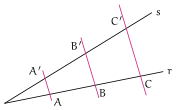

Dos segmentos son proporcionales a otros dos si la razón entre sus longitudes es la misma. Por ejemplo, los segmentos de 3 cm y 6 cm son proporcionales a los de 4 cm y 8 cm, porque \(\frac{3}{4}=\frac{6}{8}\).

Se cuenta que Tales de Mileto midió la altura de la gran pirámide de Egipto comparando su sombra con la de un bastón. Es la idea de los triángulos en posición de Tales: dos triángulos con un ángulo común y lados opuestos paralelos.
9.1.1
Un edificio proyecta una sombra de 24 m y, a la misma hora, una persona de 1,60 m proyecta una sombra de 2 m. ¿Cuánto mide el edificio?
Lo que escribes se guarda solo en este navegador. Para entregarlo, pulsa «Copiar mis respuestas» y pégalo en Classroom.